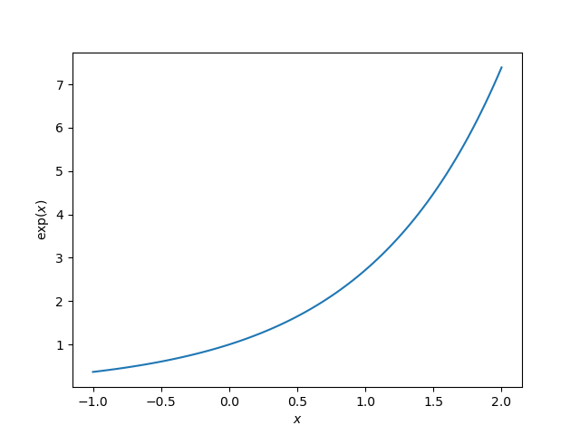

Choosing the thumbnail figure
Note
Click here to download the full example code
Choosing the thumbnail figure#
This example demonstrates how to choose the figure that is displayed as the
thumbnail, if the example generates more than one figure. This is done by
specifying the keyword-value pair
sphinx_gallery_thumbnail_number = <fig number> as a
comment somewhere below the docstring in the example file. In this example, we
specify that we wish for the second figure to be the thumbnail.
- 

# Code source: Óscar Nájera
# License: BSD 3 clause
import numpy as np
import matplotlib.pyplot as plt
def main():
x = np.linspace(-1, 2, 100)
y = np.exp(x)
plt.figure()
plt.plot(x, y)
plt.xlabel('$x$')
plt.ylabel('$\exp(x)$')
# The next line sets the thumbnail for the second figure in the gallery
# (plot with negative exponential in orange)
# sphinx_gallery_thumbnail_number = 2
plt.figure()
plt.plot(x, -np.exp(-x), color='orange', linewidth=4)
plt.xlabel('$x$')
plt.ylabel('$-\exp(-x)$')
# To avoid matplotlib text output
plt.show()
if __name__ == '__main__':
main()
Total running time of the script: ( 0 minutes 0.264 seconds)